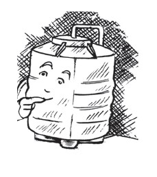
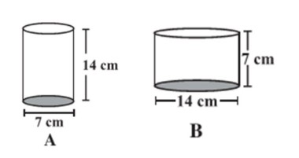
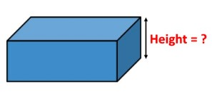
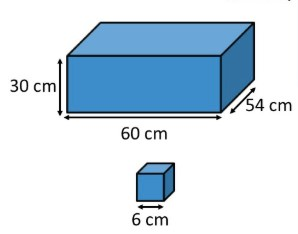
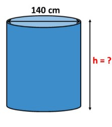
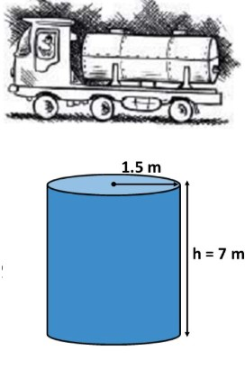
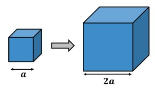

NCERT Class 8 - Exercise 9.3
1. Given a cylindrical tank, in which situation will you find surface area and in which situation volume.
(a) To find how much it can hold.
(b) Number of cement bags required to plaster it.
(c) To find the number of smaller tanks that can be filled with water from it.
(a) To find how much it can hold.
(b) Number of cement bags required to plaster it.
(c) To find the number of smaller tanks that can be filled with water from it.

Explanation:
Volume refers to the space a 3D object occupies or the capacity it holds. Surface area is the total area of the surfaces of a 3D object.
(a) To find how much it can hold, we need to find its
Volume
(b) To find the number of cement bags required to plaster it, we need to find its
Surface Area.
(c) To find the number of smaller tanks that can be filled, we need to compare the
Volume
of the large tank with the volume of the smaller tanks.
2. Diameter of cylinder A is 7 cm, and the height is 14 cm. Diameter of cylinder B is 14 cm and height is 7 cm. Without doing any calculations can you suggest whose volume is greater? Verify it by finding the volume of both the cylinders. Check whether the cylinder with greater volume also has greater surface area?

Without Calculation:
The formula for volume is \( V = \pi r^2 h \). Cylinder B has a larger radius (\(r_B = 7\) cm) and a smaller height (\(h_B = 7\) cm), while Cylinder A has a smaller radius (\(r_A = 3.5\) cm) and a larger height (\(h_A = 14\) cm).Since the radius is squared in the formula, doubling the radius has a much larger effect on the volume than doubling the height. Therefore, Cylinder B's volume should be greater.
Verification by Calculation:
Volume of Cylinder A:
Radius \(r_A = 7/2 = 3.5\) cm, Height \(h_A = 14\) cm\( V_A = \pi r_A^2 h_A = \frac{22}{7} \times (3.5)^2 \times 14 \)
\( = \frac{22}{7} \times 12.25 \times 14 = 22 \times 12.25 \times 2 = 539 \) cm\(^3\)
Volume of Cylinder B:
Radius \(r_B = 14/2 = 7\) cm, Height \(h_B = 7\) cm\( V_B = \pi r_B^2 h_B = \frac{22}{7} \times (7)^2 \times 7 \)
\( = \frac{22}{7} \times 49 \times 7 = 22 \times 7 \times 7 = 1078 \) cm\(^3\)
Surface Area Comparison:
Surface Area of Cylinder A:
\( TSA_A = 2\pi r_A(r_A + h_A) = 2 \times \frac{22}{7} \times 3.5 (3.5 + 14) \)\( = 44 \times 0.5 \times 17.5 = 22 \times 17.5 = 385 \) cm\(^2\)
Surface Area of Cylinder B:
\( TSA_B = 2\pi r_B(r_B + h_B) = 2 \times \frac{22}{7} \times 7 (7 + 7) \)\( = 44 \times 14 = 616 \) cm\(^2\)
3. Find the height of a cuboid whose base area is 180 cm\(^2\) and volume is 900 cm\(^3\)?

Given:
Base Area = 180 cm\(^2\)Volume = 900 cm\(^3\)
Formula:
The volume of a cuboid is given by: \( \text{Volume} = \text{Base Area} \times \text{Height} \).Calculation:
\( 900 = 180 \times \text{Height} \)\( \text{Height} = \frac{900}{180} = 5 \) cm
The height of the cuboid is 5 cm.
4. A cuboid is of dimensions 60 cm × 54 cm × 30 cm. How many small cubes with side 6 cm can be placed in the given cuboid?

Step 1: Find the volume of the cuboid
Dimensions of cuboid: \(l = 60\) cm, \(b = 54\) cm, \(h = 30\) cm.\( \text{Volume of cuboid} = l \times b \times h = 60 \times 54 \times 30 = 97200 \) cm\(^3\)
Step 2: Find the volume of one small cube
Side of the cube \(a = 6\) cm.\( \text{Volume of cube} = a^3 = 6^3 = 216 \) cm\(^3\)
Step 3: Find the number of cubes
Number of cubes = \( \frac{\text{Volume of cuboid}}{\text{Volume of cube}} \)\( = \frac{97200}{216} = 450 \)
450 small cubes can be placed in the given cuboid.
5. Find the height of the cylinder whose volume is 1.54 m\(^3\) and diameter of the base is 140 cm?

Given:
Volume = 1.54 m\(^3\).Diameter = 140 cm.
Step 1: Convert all units to metres
Diameter = 140 cm = 1.4 m.Radius \(r = \frac{1.4}{2} = 0.7\) m.
Step 2: Use the Volume formula to find the height
The volume of a cylinder is \( V = \pi r^2 h \).\( 1.54 = \frac{22}{7} \times (0.7)^2 \times h \)
\( 1.54 = \frac{22}{7} \times 0.49 \times h \)
\( 1.54 = 22 \times 0.07 \times h \)
\( 1.54 = 1.54 \times h \)
\( h = \frac{1.54}{1.54} = 1 \) m
The height of the cylinder is 1 m.
6. A milk tank is in the form of cylinder whose radius is 1.5 m and length is 7 m. Find the quantity of milk in litres that can be stored in the tank?

Given:
Cylinder radius \(r = 1.5\) m.Cylinder length (height) \(h = 7\) m.
Step 1: Find the volume of the tank in m\(^3\)
\( V = \pi r^2 h = \frac{22}{7} \times (1.5)^2 \times 7 \)\( = 22 \times 2.25 = 49.5 \) m\(^3\)
Step 2: Convert the volume to litres
We know that \( 1 \text{ m}^3 = 1000 \) litres.Quantity of milk = \( 49.5 \times 1000 = 49500 \) litres.
49,500 litres of milk can be stored in the tank.
7. If each edge of a cube is doubled,
(i) how many times will its surface area increase?
(ii) how many times will its volume increase?
(i) how many times will its surface area increase?
(ii) how many times will its volume increase?

Let's assume:
Original edge length = \(a\).New edge length = \(2a\).
(i) Surface Area Increase:
Original Surface Area: \( TSA_{original} = 6a^2 \)New Surface Area: \( TSA_{new} = 6(2a)^2 = 6(4a^2) = 24a^2 \)
Ratio = \( \frac{TSA_{new}}{TSA_{original}} = \frac{24a^2}{6a^2} = 4 \)
The surface area will increase by a factor of 4.
(ii) Volume Increase:
Original Volume: \( V_{original} = a^3 \)New Volume: \( V_{new} = (2a)^3 = 8a^3 \)
Ratio = \( \frac{V_{new}}{V_{original}} = \frac{8a^3}{a^3} = 8 \)
The volume will increase by a factor of 8.
8. Water is pouring into a cuboidal reservoir at the rate of 60 litres per minute. If the volume of reservoir is 108 m\(^3\), find the number of hours it will take to fill the reservoir

Given:
Volume of reservoir = 108 m\(^3\).Rate of water pouring = 60 litres per minute.
Step 1: Convert the volume to litres
We know that \( 1 \text{ m}^3 = 1000 \) litres.\( \text{Volume in litres} = 108 \times 1000 = 108000 \) litres.
Step 2: Find the time taken in minutes
Time in minutes = \( \frac{\text{Total volume}}{\text{Rate}} = \frac{108000}{60} = 1800 \) minutes.Step 3: Convert the time to hours
Since there are 60 minutes in an hour, we divide the total minutes by 60.Time in hours = \( \frac{1800}{60} = 30 \) hours.
It will take 30 hours to fill the reservoir.
Designed & Developed by Zahid Qayoom.